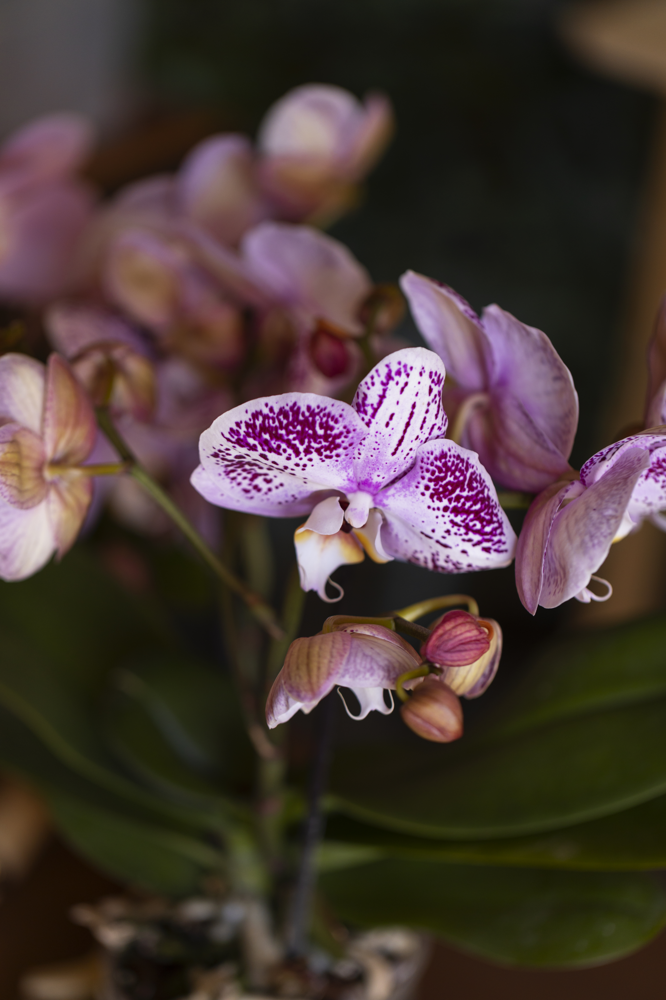
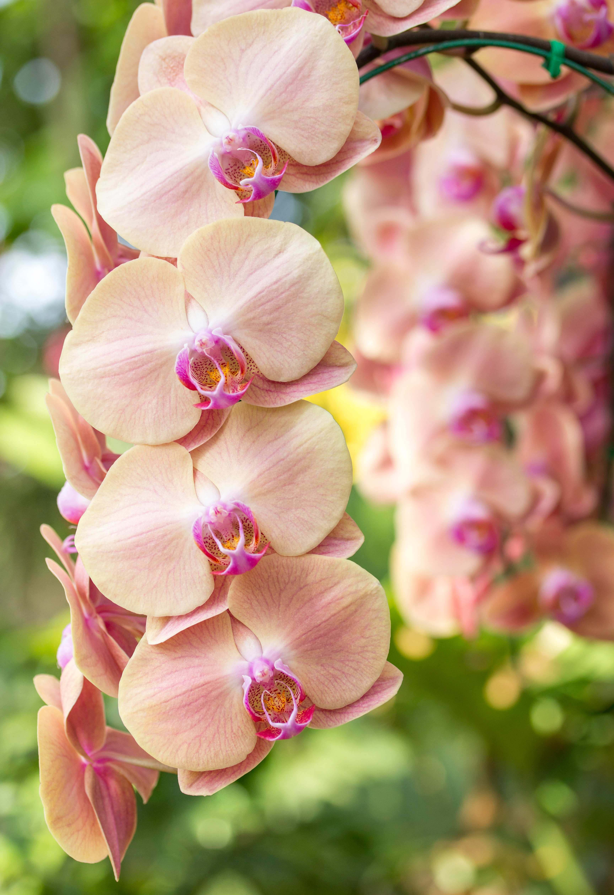

Kebun Anggrek Sememi di Surabaya merupakan salah satu destinasi kunjungan edukasi yang memukau, yang didedikasikan untuk pelestarian dan pemuliaan berbagai spesies anggrek. Kebun ini menawarkan keindahan dan keragaman flora anggrek yang tumbuh subur di lahan yang luas dan hijau, menghadirkan pengalaman yang menyegarkan bagi para pengunjung.
Kebun Anggrek Sememi selalu terbuka untuk siapa saja yang ingin mendekatkan diri dengan alam, belajar tentang keanekaragaman hayati, atau sekadar menikmati ketenangan di tengah suasana taman yang asri.
Jl. Sememi Jaya Utara Gg. II, Sememi, Surabaya.

Sebuah bangunan khusus yang berisi berbagai jenis anggrek dengan penataan artistik, memberikan pengalaman melihat keindahan bunga anggrek dari dekat.
Area yang dirancang untuk para pengunjung mengabadikan momen dengan latar belakang tanaman dan bunga yang indah, cocok untuk semua kalangan.
Area khusus yang berisi berbagai jenis anggrek dengan penataan artistik, memberikan pengalaman melihat keindahan bunga anggrek dari dekat.
Fasilitas edukasi tentang tanaman anggrek dan konservasi, lengkap dengan informasi dan pemandu untuk menambah wawasan pengunjung.
Area bermain khusus untuk anak-anak dengan peralatan yang aman dan menyenangkan, memungkinkan keluarga menikmati waktu bersama di alam.
Area yang bisa digunakan untuk beribadah, dilengkapi dengan tempat duduk dan meja serta peralatan sholat.
Kultur jaringan dan budidaya jamur merupakan teknik inovatif dalam mendukung keberlanjutan pertanian modern. Kultur jaringan digunakan untuk memperbanyak tanaman secara cepat dan memastikan kualitas bibit yang unggul, sedangkan budidaya jamur memberikan peluang ekonomi yang tinggi melalui pemanfaatan sumber daya yang efisien dan hasil panen yang melimpah.